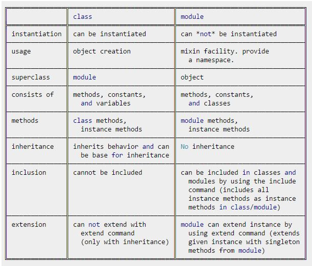
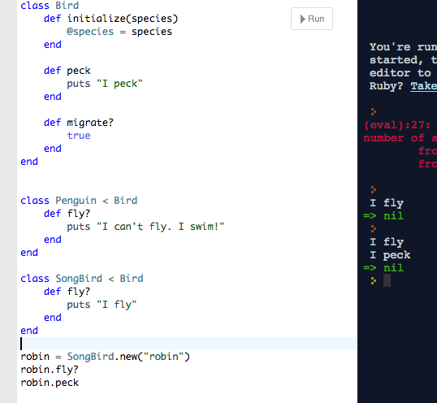

Modules vs. Classes in Ruby
October 27, 2014
First, the following table - shamelessly stolen from this wise person on stack overflow provides a summary:
As an Object-Oriented language, Ruby consists of objects and messages sent between these objects using methods. Ruby objects know what messages they can and cannot respond to.
As we saw before, classes provide a blueprint for creating certain kinds of objects. Classes exist to have new members instantiated. Today we will review classes and introduce inheritance, and then look at modules, which also empower objects to respond to certain types of messages. A key difference is that modules cannot create new objects. 'Mixing in' a module allows objects to wear certain kinds of costumes and react to methods a certain way. The complete details of the class underneath the wardrobe are not necessarily important.
Inheritance in Classes

Further, classes also have a cool feature by which they can create subclasses. The idea is that we might have types of things that share many qualities, but differ in a few respects. For instance, Penguin is a type of bird with wings and beak, but unlike most birds, it can't respond to the method fly.
To solve the problem of representing song_birds and penguins, we can create a superclass of Bird - which houses all of the shared elements, like @beak, @wings, @migrate, but leaves other variables and methods associated with the subclasses to those subclasses.
In this case, no Bird objects will be created directly from the superclass. Instead, we will only create objects from the subclasses Penguin and Songbird (which draw on information in the Bird class). The class Bird only exists as a place to house the shared methods and variables (wing, etc.) between the subclasses.
An important note: Ruby only permits classes to have single inheritance. That means that any particular subclass can only inherit from one direct parent (although its parent will have a parent as well). So what if you want to combine methods from different classes and have them apply to one object? You might consider using module!
Modules
Modules are like classes in that they provide a framework for packaging types of behaviors and constants. They contain their own family of methods, and can be 'mixed-in' to classes and objects by saying 'include ____[module x}_____'. When subclass objects receive a message they don't understand, it gets forwarded to the superclass and the object responds appropriately. In the same way, mixing-in modules allows your object to message-forward to the module.
Modules differ from classes though in that they cannot be instantiated. That is, they can hand out masks to objects entering a masquerade ball, but they can't generate lots of new attendees de la nada. They simply provide access to a collection of methods and constants. For me so far, a good way to think about a Module is that it creates an abstract Ducktype.
Ducktype
As Sandi Metz explains in Practical Object-Oriented Design in Ruby (POODR), a duck type is an abstract representation of a type of object that's based on function. When many different kinds of objects respond the same way to a particular message, we may have a duck type on our hands. That is, it doesn't matter exactly what class the object is. If it walks like a duck and quacks like a duck, then for our purposes, it must be a duck.

That's what's useful about modules: 'mixing' them in allows objects to respond appropriately to certain methods, no matter to what class they belong.
Although you can make your own modules, Ruby also comes built in with several modules available for use - like the Math module. To use math, you can say require "Math." 'Mixing in' this module into a class allows objects in that class to respond to the module's methods, like cos. They also recognize certain constants that exist in the module, like PI.
Another useful module that we have seen a lot in the early weeks at DBC is the module Enumerable. Enumerable allows you to do lots of interesting things to any object of a class that already has an #each method (so that you can iterate over items in the object), like an array or hash, as we have seen.
So for, now, modules are a great resource. They're like Italian seasoning, maybe - a mix of Oregano, Rosemary and Thyme - that can be automatically added to a variety of dishes -chicken, pasta. Maybe we'd have a Dinner class that could generate instances of menus, and an Italian module that could be mixed in to be called on for seasoning and certain cuts -like make_julienne, or make_caesar (to be applied to salads or wraps, subclasses of Lunch).